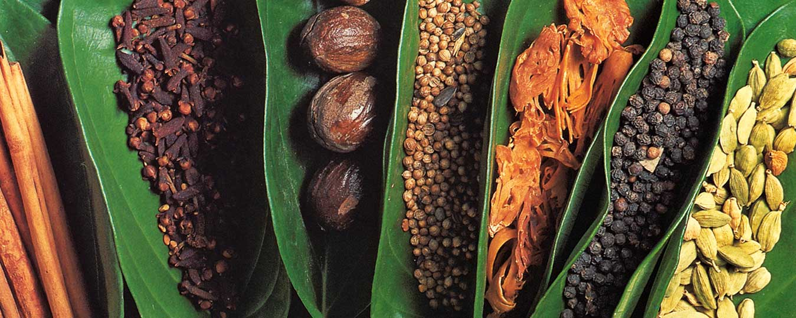

Kithul syrup – also known as kithul treacle – is a Sri Lankan syrup made from unrefined palm sugar. It lends these puddings a rich, caramel-like flavour and whispers of date and honey
Heat the oven to 170C/150C fan/gas 3. Put six ramekins into a shallow oven tray and fill the tray with enough water to reach halfway up the ramekins.
Crack the whole eggs and yolks into a mixing bowl, whisk well and keep to one side.
Heat the kithul syrup, cardamom seeds, nutmeg, vanilla and ¼ tsp of fine sea salt in a pan over a medium heat and simmer for 2 mins. Add the coconut milk and whisk well. Bring up to just below boiling then take off the heat.
Ladle a little of the hot mixture into the eggs to temper, whisking well. Add another ladle, whisking again, then pour all of the eggs back into the pan of coconut milk. Give it a final whisk, then tip the mixture into a jug.
Fill each of the ramekins to the very top, then put the tray in the oven and bake for 25-30 mins or until the custards have a gentle wobble in the middle but are set around the edges. Carefully remove and let them rest for 15 mins. Garnish with the cashews and coconut. They can be eaten hot or cold.
